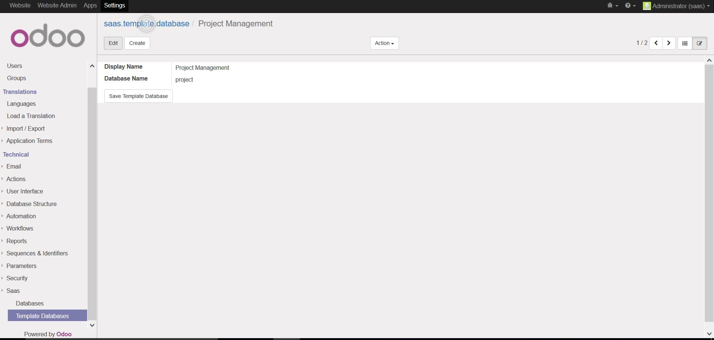
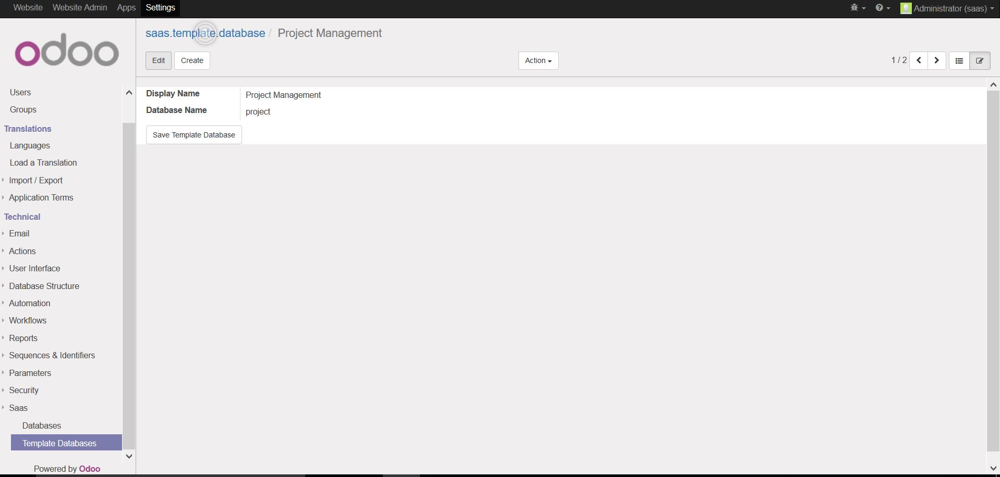

Instructions
1. Create a template database for the user to pick from2. Go to <domain_name>/try/package and select one of the templates setup
3. Enter in details about the new database
4. The template database will be cloned and the user can sign in using the credentials entered in the form
Manage SAAS databases
Keep track of all your saas database.
Instructions
1. Go to 'Saas->Saas Databases'
Sign up via web form
Let others try out your specially setup odoo configuration
Instructions
1. Go to the <domain_name>/try/package on your website
2. Enter details on the webform
3. The template database will be cloned and the user can login using the credentials provided in the form
Template Databases
 

Create database templates for different types of systems.
Instructions
1. Create a new database in your Odoo instance
2. Make changes to the database, it will act as a template so setup your modules and make any other changes you like
3. Install 'sythil_saas_client' module, this will create a template saas user in the system
4. Configure the new saas user with the permissions you want the new user to possess upon creating thier system
5. Go back to your saas server database
6. Go to 'Saas->Template Databases'
7. Type in the display name and the actual database name
8. New users will get a copy of your template database expect the saas user template will have the name, email, login and password that was provided on the web form
SAAS Portal
After users sign up for there first system they can access the saas server portal to manage thier databases
Instructions
1. Login as a saas user
2. Go to the now visible SAAS Portal website menu
3. From there you can go to any of your databases or freely export your database
Extra Modules
sythil_saas_client
Installed on a template database, creates a saas user which will become the new users when a system is createdFind a bug or need support? send an email to steven@sythiltech.com.au